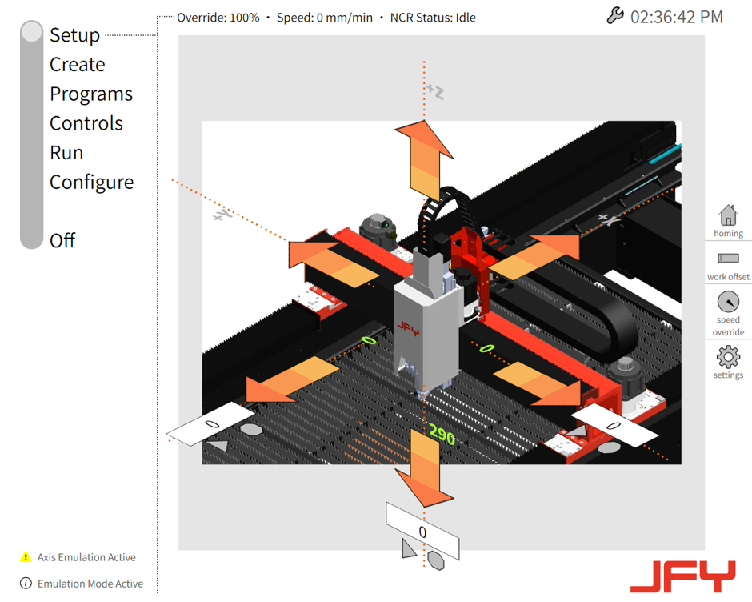
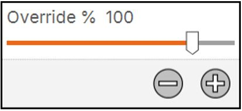
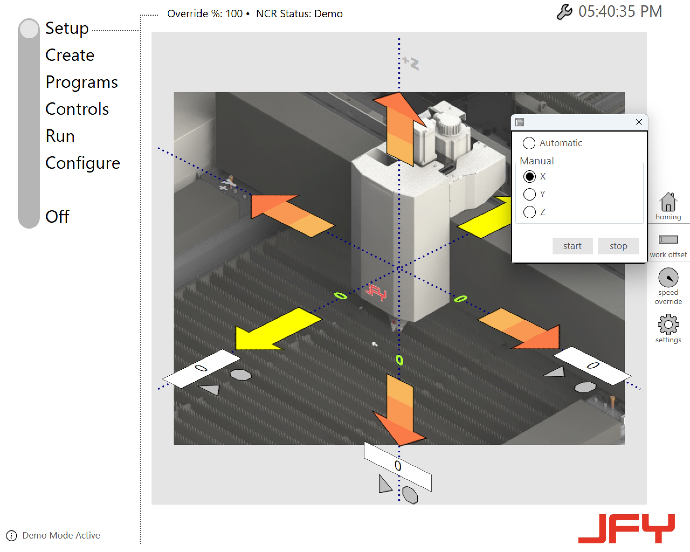
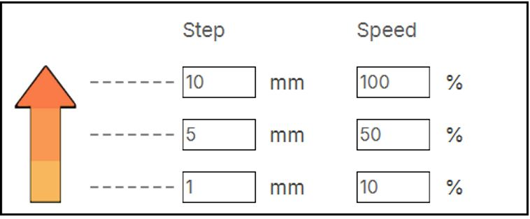

Machine Operation
By using the touch screen you have options to operate the machine:
Jogging
The axis can be traversed on this page. The current positions of the X, Y,and Z axes can also be viewed here.

The following traversing types are available:
-
Modal traversing
-
Incremental traversing
-
Target point traversing
Modal Travel
A mouse down for over 300ms will start a modal movement until the user lifts the finger/mouse (long click). Depending on where the user clicked on the arrow, the machine will move at different speeds. The speed for modal travel can be configured in settings.
Step Travel
A click (mouse down immediately followed by mouse up, within 300ms) will move it in steps. Depending on where the user clicked on the arrow, the axis will move in short, medium, or large steps. The step size can be configured in settings.
Target Point Travel
The user can specify the target point of the selected axis in the input field. Press the START key to start the movement. The movement of the axis can be stopped at any time with the STOP key.
Speed Override
The user can use the Override + and Override - to influence the speed of axis movements (In percent).

-
Override + : Increase override percentage for the configured/set axis or path speed. Above 10%, the value is changed in 10% increments, below 10% it is changed in 1% increments.
-
Override - : Reduce override percentage for the configured/set axis or path speed. Above 10%, the value is changed in 10% decrements, below 10% it is changed in 1% decrements. The user can also use the slider to increase or decrease the speed.
Homing
Axis referencing can be done in two ways.
-
Automatic : If this function is activated, automatic reference point traversing is initiated by pressing the START key. Reference point traversing can be cancelled at any time by pressing the STOP key.
-
Manual : If this function is selected, manual reference point traversing of an individual axis can be initiated. Select the required axis and press the START key to initiate traversing. Reference point traversing can be cancelled at any time by pressing the STOP key.

Settings
The user can configure the step size (for step travel) and speed (for modal travel) for the specific regions on the arrow in settings.
